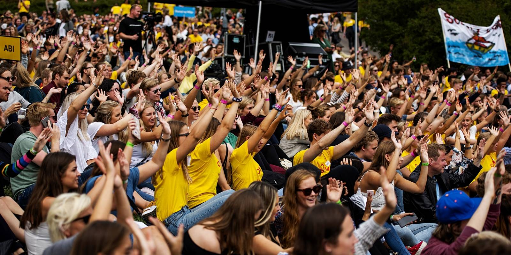

OsloMet studenter. Foto: OsloMet
Home Page
Denne nettsiden inneholder 5 sider. Nettsiden består av en "Topical Page" som handler om utvikling av digital infrastruktur. Vi har også tatt med to sider som handler om Andrea Spiseri ved Pilestredet 32 og Universitetsbiblioteket i Pilestredet 35. Vi har også en side som tar for seg brukervennlighet i nettsiden.